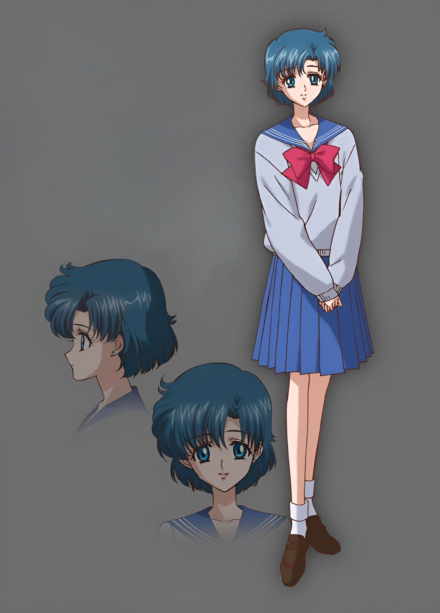
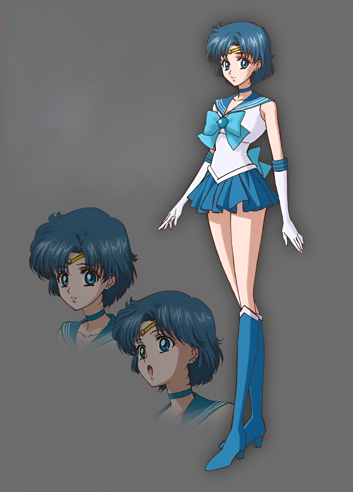

Ami Mizuno
Sailor Mercury • Guardian of Water & Wisdom
Power: 6
Speed: 7
Magic: 9


Power: 6
Speed: 7
Magic: 9
About Ami
Ami Mizuno is the strategic genius of the team, known for her calm mind, analytical skills, and powerful water‑based magic.
Abilities
Main Attack: Mercury Aqua Mist
Special Ability: Supercomputer Analysis
Personality
Intelligent, gentle, introverted, and deeply loyal.
← Back to Gallery